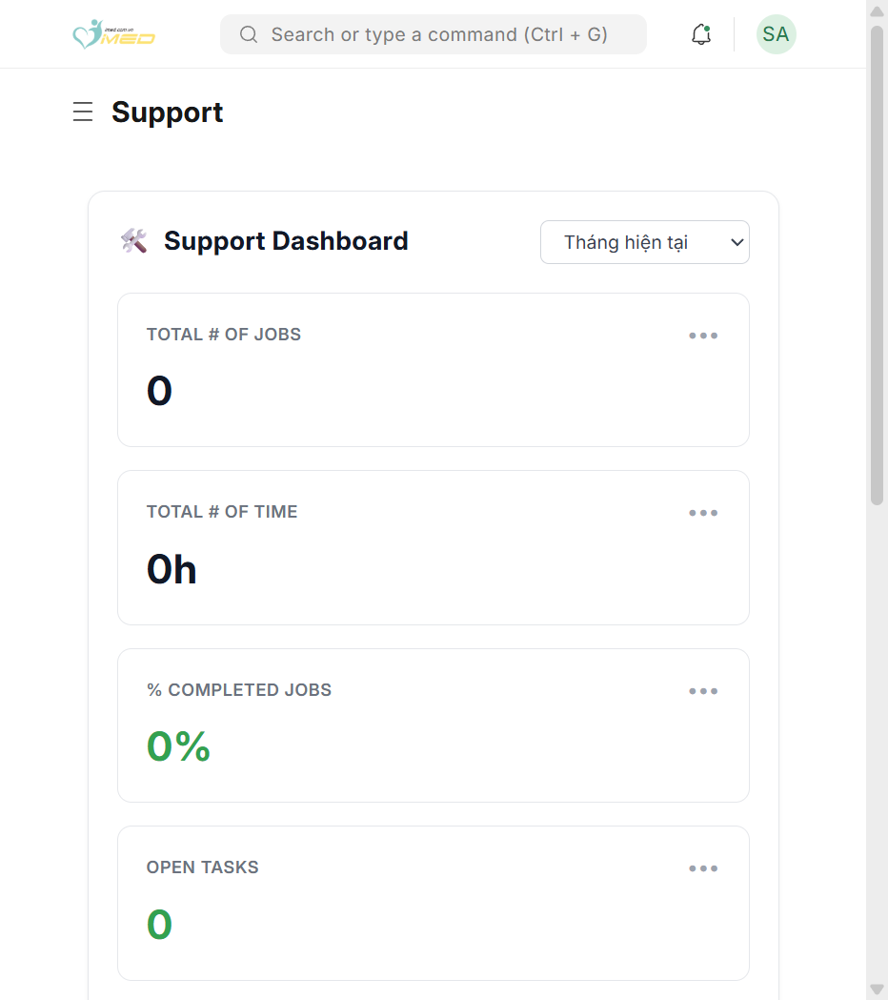
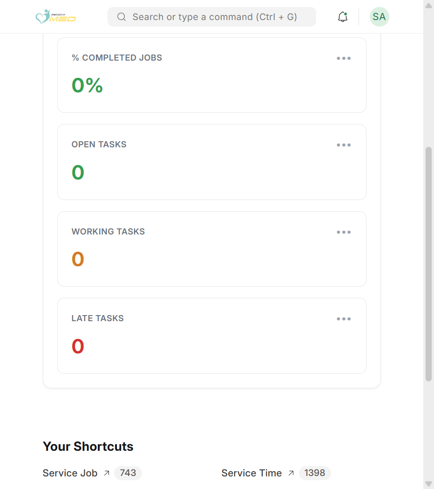
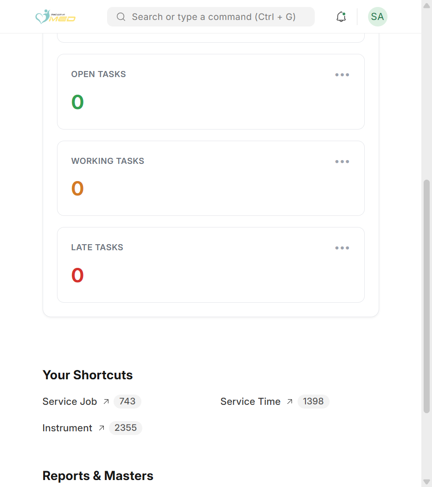
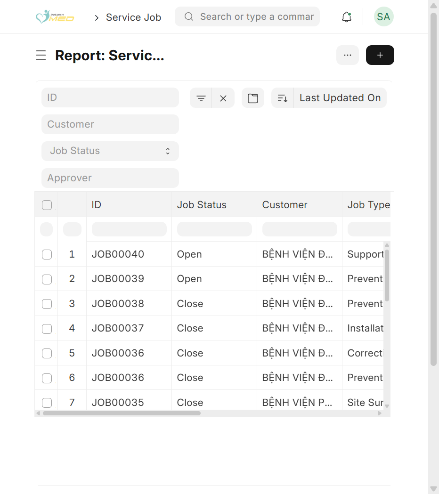
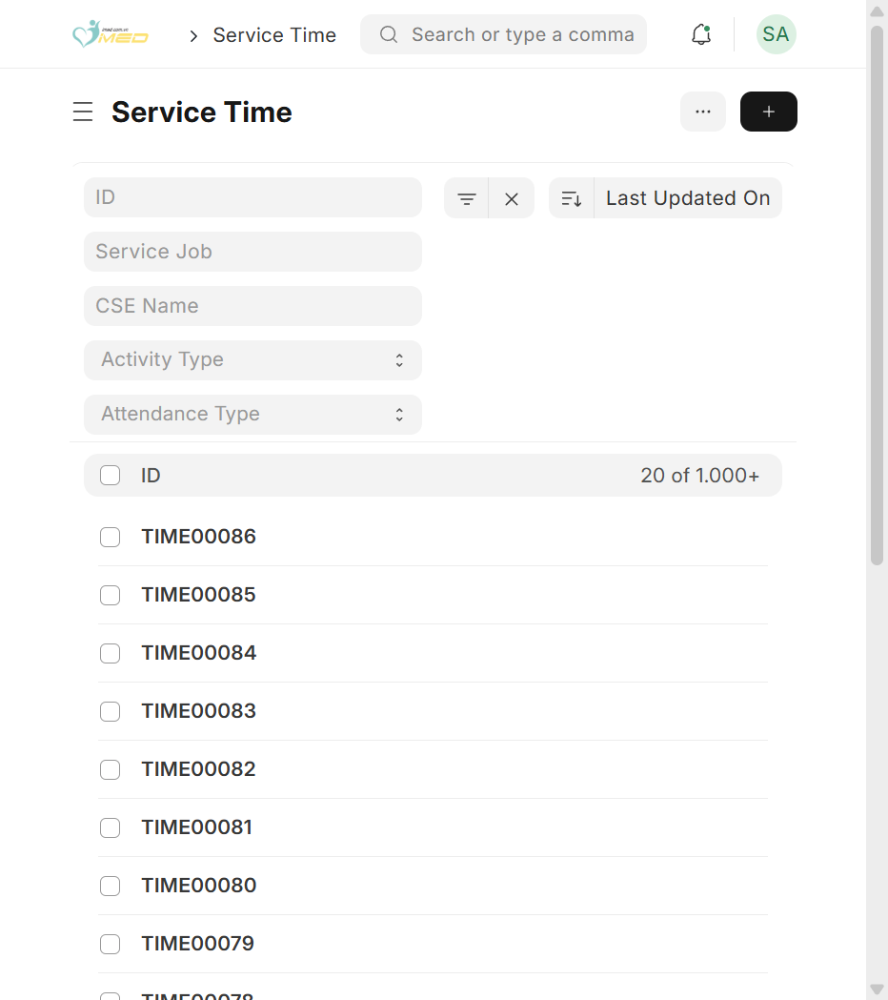
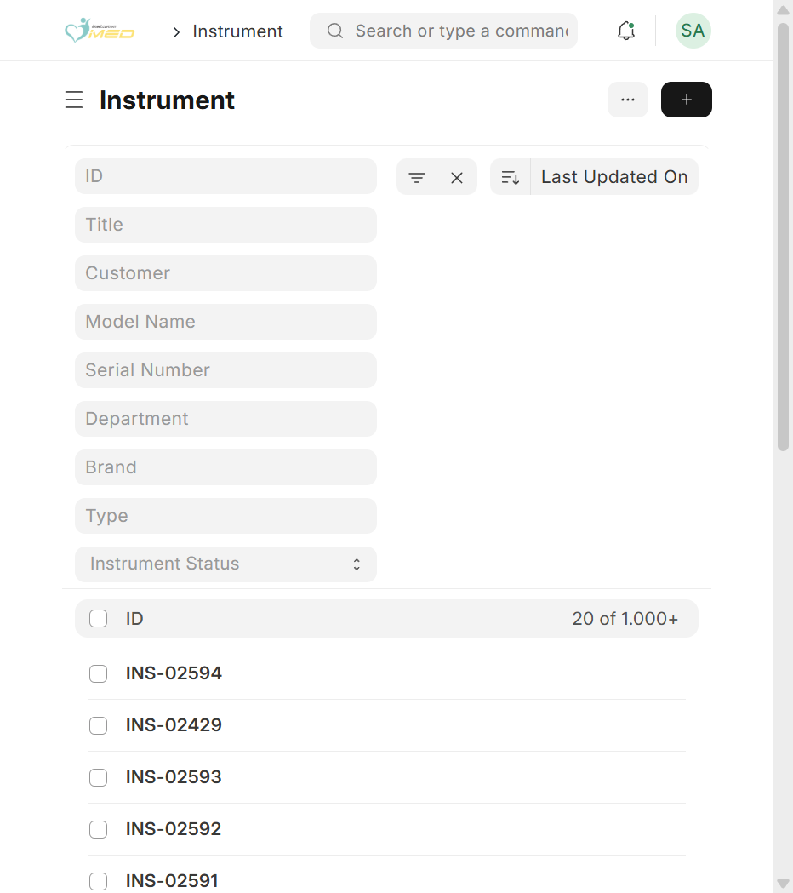
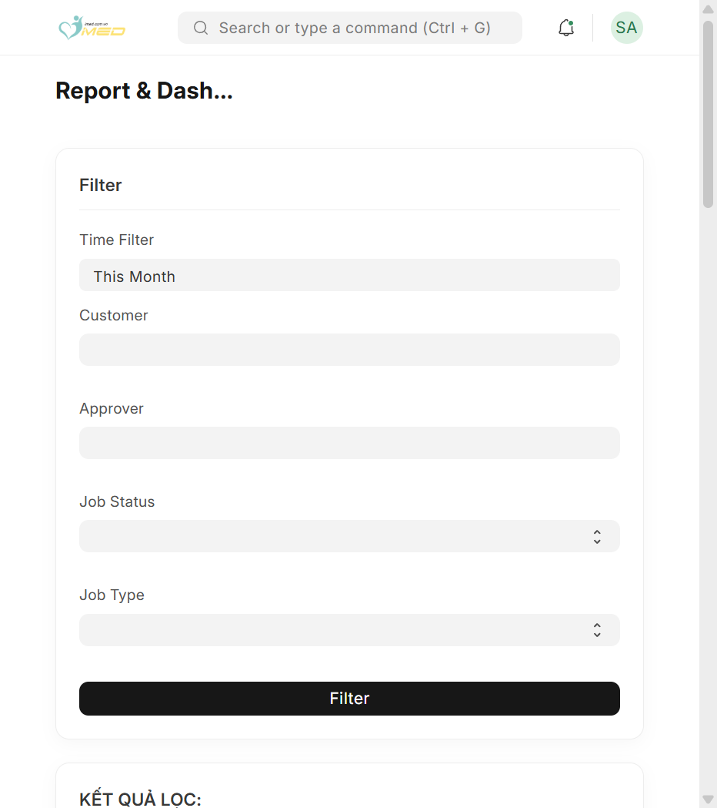
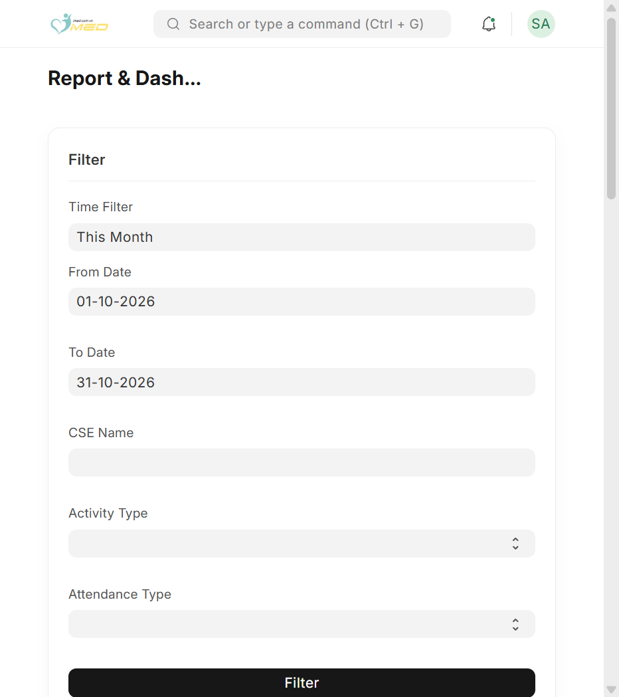

Mục đích
Workspace Support là nơi đội dịch vụ iMED theo dõi công việc hiện trường: Service Job, ghi giờ Service Time, tra cứu Instrument, và (với quản lý) xem báo cáo tổng hợp.
Trang landing có Support Dashboard — KPI theo kỳ bạn chọn, nhấn thẻ để mở danh sách đã lọc, và lối tắt mở nhanh các màn hình chính.
Trước khi bắt đầu
- Bạn đã đăng nhập ERP
- Tài khoản có vai trò iMED Service User (workspace Service, Service Job / Service Time / Instrument)
- Xem báo cáo Service Job Report / Service Time Report: cần iMED Service Leader hoặc iMED Service Manager
Các bước thực hiện
Bước 1: Mở workspace Service
Trên thanh tìm kiếm Desk (Ctrl + G), gõ Service (hoặc Support). Hoặc chọn Service ở sidebar (route Desk vẫn là /app/support).

Bước 2: Chọn kỳ trên Support Dashboard
Ở góc phải khối Support Dashboard, mở danh sách thời gian. Chọn Hôm nay, Tuần này, Tháng hiện tại, Quý này, Năm nay, hoặc Tùy chọn ngày... rồi nhập From / To — số liệu các thẻ cập nhật theo kỳ.

Bước 3: Đọc thẻ KPI và mở danh sách
Cuộn trong khối dashboard để xem đủ thẻ. Nhấn một thẻ để mở danh sách Service Job, Service Time, hoặc Task đã lọc theo cùng kỳ.

| Thẻ | Ý nghĩa |
|---|---|
| TOTAL # OF JOBS | Số Service Job trong kỳ — nhấn để xem danh sách |
| TOTAL # OF TIME | Tổng thời gian Service Time trong kỳ |
| % COMPLETED JOBS | Tỷ lệ job đã đóng trong kỳ |
| OPEN TASKS / WORKING TASKS / LATE TASKS | Task Desk gắn công việc dịch vụ — màu cam/đỏ nhắc trễ hạn |
Bước 4: Dùng lối tắt và báo cáo
Khu vực Your Shortcuts mở nhanh Service Job, Service Time, Instrument (số badge = tổng bản ghi tham khảo). Reports & Masters dẫn tới báo cáo (Leader/Manager).

Bước 5: Mở danh sách Service Job
Từ lối tắt hoặc tìm Service Job. Lọc theo Customer, Job Status (Open/Close), Approver, … rồi nhấn Filter.

Bước 6: Tạo Service Job mới
Nhấn Add Service Job (nút + trên thanh tiêu đề). Điền thông tin bắt buộc theo quy trình nội bộ (khách hàng, loại job, CSE, …) rồi lưu hoặc gửi duyệt nếu có workflow.

Bước 7: Mở danh sách Service Time
Service Time ghi nhận giờ theo Service Job: Activity Type (Travel, On-site Work, Phone Support, Support, …) và Attendance Type. Lọc theo job, CSE Name, rồi mở dòng hoặc Add Service Time.

Bước 8: Tra cứu Instrument
Instrument là hồ sơ thiết bị tại khách hàng (serial, model, bảo hành, trạng thái). Lọc theo Customer, Serial Number, Instrument Status. Nhấn ID (ví dụ INS-xxxxx) để mở chi tiết.

Bước 9: Service Job Report (Leader / Manager)
Mở từ workspace → Service Job Report hoặc tìm kiếm tên trang. Chọn Time Filter, khách hàng, approver, Job Status, Job Type (gồm Support). Nhấn Filter để xem bảng và biểu đồ.


Bước 10: Service Time Report (Leader / Manager)
Tương tự với From Date / To Date, CSE Name, Activity Type, Attendance Type.


Kết quả mong đợi
Sau khi làm theo các bước trên:
- Support Dashboard hiển thị KPI và task theo cùng kỳ bạn chọn; nhấn thẻ mở list đúng bộ lọc ngày
- Bạn mở được danh sách và phiếu Service Job, Service Time, Instrument từ lối tắt hoặc tìm kiếm Desk
- Service User tạo/sửa job và ghi giờ theo quyền được cấp; Leader/Manager xem báo cáo sau khi nhấn Filter trên trang Report
Không có dữ liệu trong kỳ: KPI dashboard có thể hiện 0; danh sách trống hoặc thông báo chưa có bản ghi — thử mở rộng kỳ thời gian.
Xử lý sự cố thường gặp
| Triệu chứng | Nguyên nhân có thể | Cách xử lý |
|---|---|---|
| Không mở được workspace Service | Thiếu vai trò dịch vụ | Nhờ quản trị gán iMED Service User (hoặc Leader / Manager) |
| Dashboard toàn số 0 | Kỳ hẹp hoặc chưa có job/time trong kỳ | Chọn kỳ rộng hơn (Quý này, Năm nay, hoặc tùy chọn ngày) |
| Nhấn thẻ KPI không mở list | Lỗi tạm hoặc thiếu quyền xem dữ liệu | Tải lại workspace; liên hệ IT nếu không mở được Service Job / Service Time / Task |
| Không thấy báo cáo | Chỉ Leader/Manager | Service User dùng dashboard + list; yêu cầu role báo cáo nếu cần |
| Không tạo được Service Job | Thiếu quyền ghi hoặc thiếu trường bắt buộc | Hoàn tất trường đỏ; liên hệ IT nếu không có nút Add Service Job |